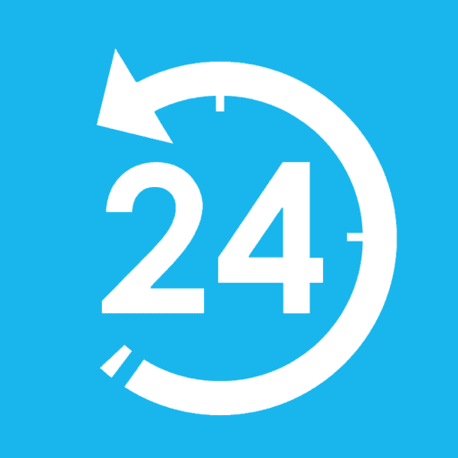

I was a developer for a service called RiiConnect24, which is a replacement for a defunct service named WiiConnect24 on the Wii. I was on the team for 8.5 years before I stepped down. Lots of the effort on the project was accomplished with my effort.
I am a moderator of GameTDB, a site to get covers and game information for games on the Wii (U), (3)DS, and more. I have contributed to the website than any other person.
I'm interesting in archiving tons of content, whether it's old sites, things that are hard to find or are forgotten.
I've worked on countless projects pertaining to the Wii, ranging from reverse engineering its services to preserving its games.